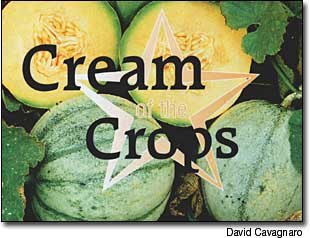

Charentais Cantaloupe
Readers nominate the following varieties as their favorites: Charentais cantaloupes, bottle onions, Boothby's Blonde' cucumber and Noir de Crimee' tomato; plus a recipe for cucumber salad with paprika dressing.
By the Mother Earth News editors
August/September 2003
Edited By Brook Elliot
Great taste is one of the biggest reasons to grow your own garden, yet many of the best-tasting varieties are becoming hard to find because our current food system often values shelf life and shipping qualities more than taste and tenderness. MOTHER'S Cream of the Crops series presents outstanding varieties recommended by our readers.
Among many delicious melons that are too fragile to ship, the French cantaloupes are at the top of my list. Perfectly sized for a half-melon serving, the French Charentais types have thick, firm, orange flesh and a small seed cavity.
When ripe, their smooth, blue-green skin turns yellow, and the melons slip easily from their stems. If those signs of readiness are not enough, just the aroma of a ripe Charentais in the patch is a dead giveaway. The flavor is perfumed and tropically exotic, too - distinct from the more typical netted-skinned varieties.
Amy Goldman writes in her book, Melons For the Passionate Grower, that the Charentais is a type of melon (many commercial varieties exist) that originated in the Poitou-Charentes region of western France, circa 1920. "It is a refined cantaloupe," she says, "free of the blemishes and warts of its ancestors."
Although the new `Honey Girl' Charentais hybrid is improved slightly, with more disease resistance than the heirlooms, any Charentais type qualifies as excellent. But you won't fund them in any supermarkets because of their fragility, so you'll have to grow your own.
Seed is available from Cooks Garden [ www.cooksgarden.com; (800) 457-97031; Horus Botanicals [341 Mulberry; Salem, AR 725761; Le jardin du Gourmet [ www.ArtisticGardens.com; (802) 748-14461; and Baker Creek Heirloom Seeds [ www.rareseeds.com; (417) 924-89171.
DAVID CAVAGNARO
Decorah, Iowa
Old-Fashoned Bottle Onion
This heirloom is a favorite among onion lovers who have tried it. The taste is not overly strong; it's spicy, without much heat, and most sweet varieties taste sickly when compared to this good-flavored one.
Although on the small side, averaging about 4 inches long and 1/2 inches thick, these whitish-purple, bottle-shaped bulbs are the best storage onions available in my opinion. They are raised mostly from sets and certainly outlast any of the milder flavored varieties in storage conditions.
Grown for generations in the Pennsylvania Dutch county, old-fashioned bottle onions still are quite popular there as a home remedy, particularly as a poultice for colds.
As far as I know, no commercial sources exist, but I will sell sets to Mother Earth News readers, as my supply allows, for $2 a pound, plus $4 for shipping.
JEPTHA I. YODER
150 Red Lane Milroy, PA 17063
Boothby's Blonde Cucumber
Boothby's Blonde,' an heirloom variety from Maine, is my favorite cucumber. Medium-sized and whitish-yellow in color, it has seeds that are slightly smaller than the more widely grown 'Lemon' cucumber, but it is more reliable than the 'Lemon.'
'Boothby's Blonde' has crisp, meaty flesh and a flavor that is soothing, cool and creamy - never bitter. It lends a sweet, mild cucumber taste to any dish and blends well with vinegar to make sliced pickles for the table that never need much added sugar.
`Boothby s Blonde' was grown by the Boothby family of Livermore, Maine, for at least five generations before being collected and introduced to the trade by Will Bonsall as pan of his Scatterseed Project, a heritage seed preservation program based in Farmington, Maine.
Will describes this cuke as especially sweet and nutty tasting, fine pickled but best as a fresh nibbler. Very early and prolific, it is at its best when no longer than 3 1/2 inches. Typical of heirloom cucumbers, 'Boothby's Blonde' has thinner fruit walls and a larger seed cavity than modern types.
Seed is available from Abundant Life seed [ www.abundantlifeseed.org ; (360) 385-5660]; High Mowing Seeds [ www.highmowingseeds.com ; (802) 888-18001; Pinetree Garden Seeds [ www.superseeds.com ; (207) 926-34001; and the Seed Savers Exchange catalog www.seedsavers.org ; (563) 382-5990].
MARALEE GERKE
Madras, Oregon
NOIR DE CRIMEE TOMATO
'Noir de Crimee,' originally from the Black Sea region of Eastern Europe, is an earthy-flavored, firm-textured, purplish-black tomato with a hint of sweetness and just the right amount of juice to make an excellent slicer.
As with all black tomatoes, 'Noir de Crimee' is reported by many tasters to have an underlying touch of saltiness, but heir loom tomato expert Carolyn Male says ,he doesn't detect any salt taste in this variety (or any other of the blacks). Instead, she describes the taste as "rich and dusky with a hint of sweetness."
Among tomato enthusiasts, the slightly oblate Noir de Crimee nuns neck and neck with 'Black from Tula for the title best of the blacks." 'Noir de Crimee translates from the French as 'Black Krim but many people who have grown both, including Male say they are not tire same tomato;
'Noir de Crimee' is reported to be darker, snore prolific and better tasting.
Seed is available from Appalachian Seed [ www.appalachianseeds.com ; (828) 89199291; Heirloom Tomatoes [ www.heirloomtomatoes.net ]; and Sand Hill Preservation Center www.sandhillpreservation.com (563) 2,46-22991.
MELANIE INANGELO
Ogunquit, Maine
Cucumber Salad with Paprika Dressing
6 Booties Blonde' cucumbers or equivalent
2 teaspoons salt cup white wine vinegar
2 to 3 bottle onions or 1 small common onion, thinly sliced
1 tablespoon sweet Hungarian paprika
1 teaspoon dill seed
1/2 teaspoon sugar
1/2 teaspoon white pepper
Peel, halve lengthwise, de-seed and thinly slice the cucumbers. Toss with the salt and let drain in a colander at least 30 minutes. In a bowl, combine the vinegar, onion, paprika, dill, sugar and pepper. Let dressing stand for at least 30 minutes. Rinse the cucumber slices well and dry them thoroughly with paper towels. Toss them with the dressing, chill and serve.
Mother Earth News
|
 'Boothby's Blonde cucumbers. |
 |
|